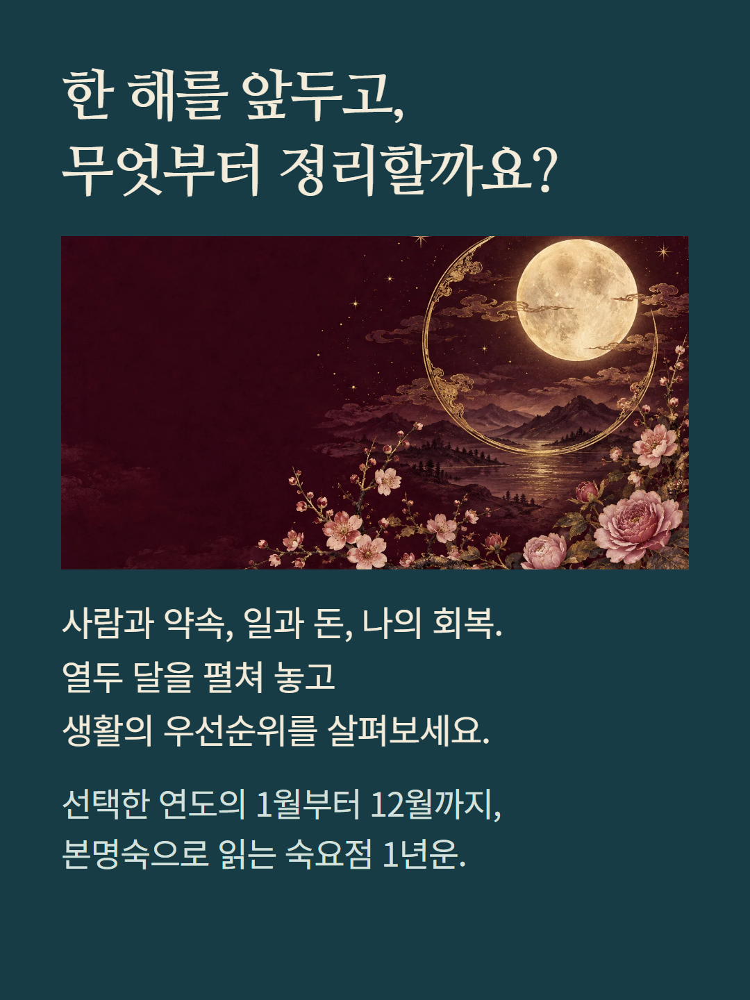
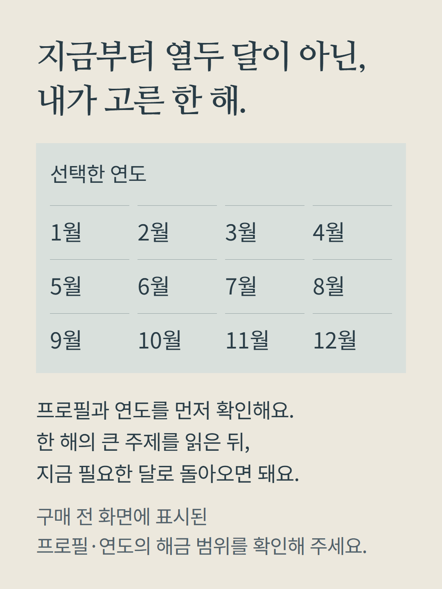
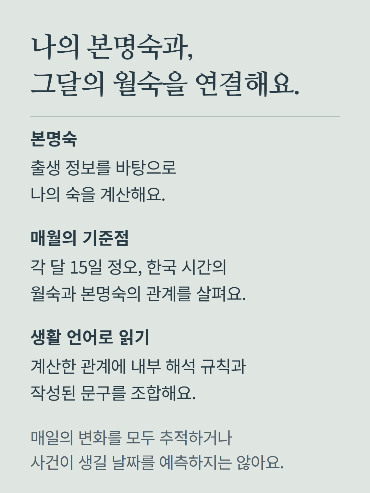
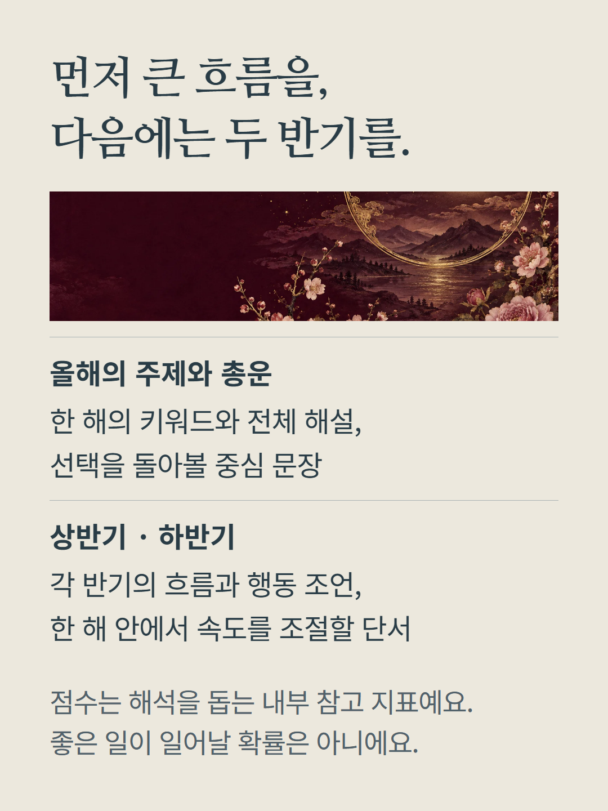
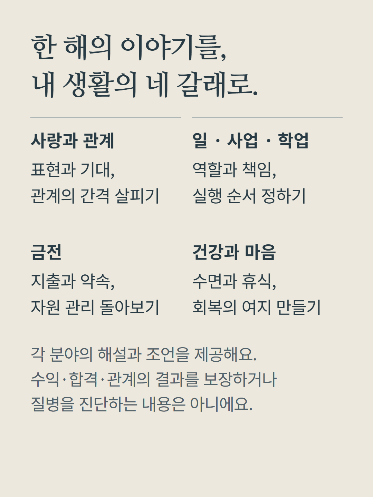
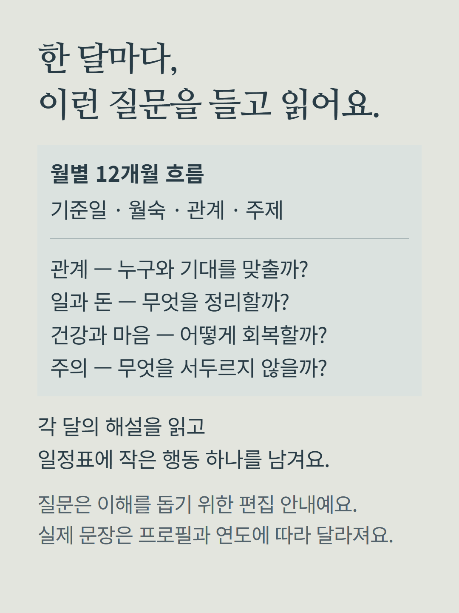
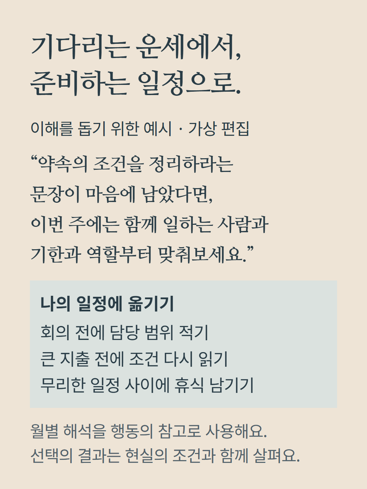
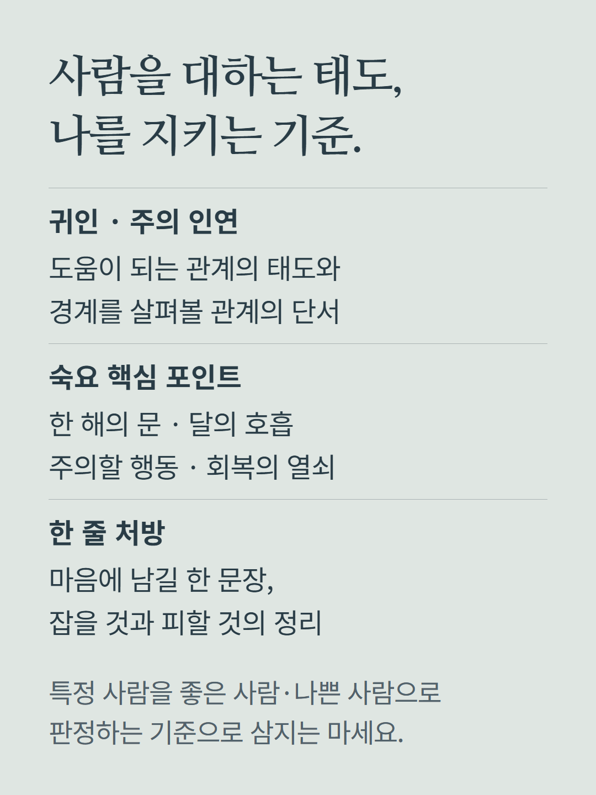
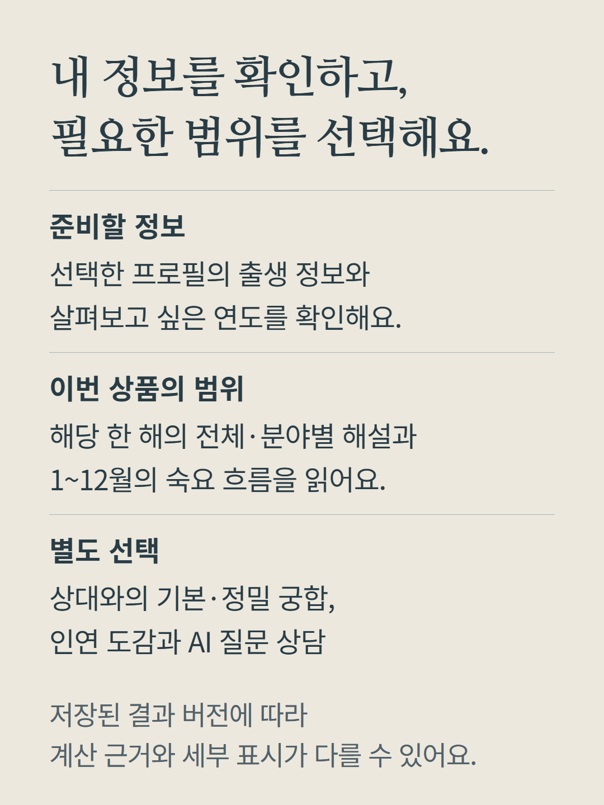
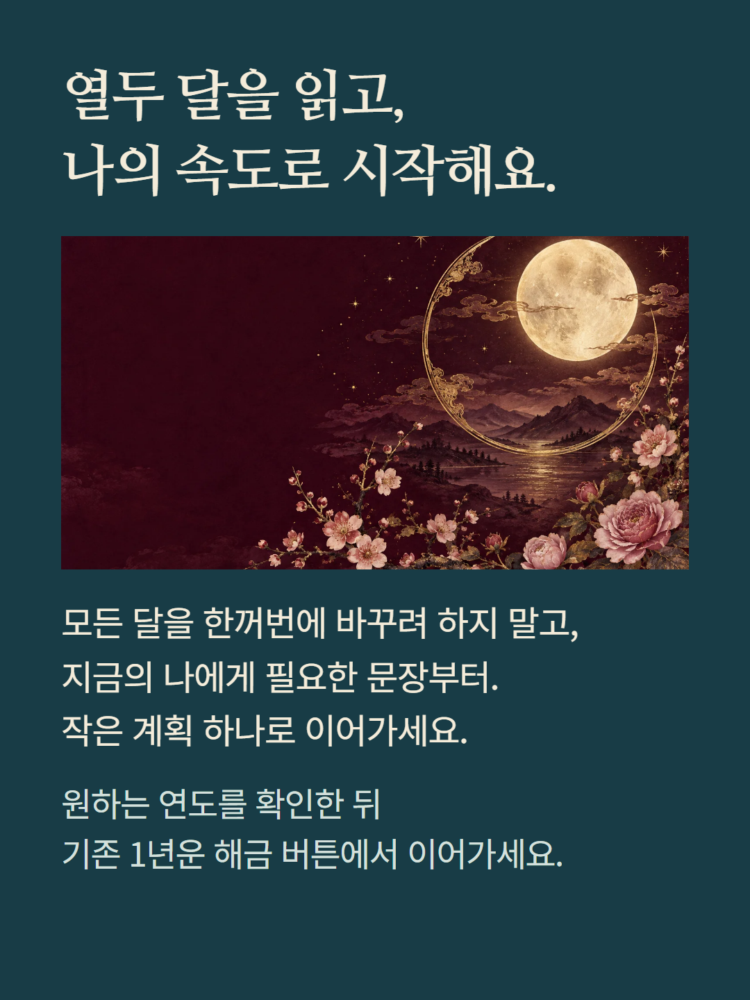

선택한 프로필과 대상 연도의 1월부터 12월까지를 읽는 숙요점 1년운입니다. 본명숙과 매월 15일 정오(한국 시간)의 월숙을 계산하고, 두 숙의 관계에 내부 해석 규칙과 작성된 문구를 조합합니다. 월 전체의 매일을 추적하거나 사건 발생일을 예측하는 서비스가 아닙니다. 총운·상하반기·사랑과 관계·일과 사업과 학업·금전·건강과 마음·인연·숙요 핵심 포인트·한 줄 처방·12개월 해설을 제공합니다. 저장된 결과 버전에 따라 계산 근거나 세부 표시가 다를 수 있습니다. 점수와 시기 분류는 서비스 내부 참고 지표이며 확률이나 검증된 예측 정확도가 아닙니다. 건강 안내는 생활 리듬과 자기 돌봄을 위한 참고이며 진단이나 치료가 아닙니다. 이해를 돕기 위한 예시는 가상 편집이며 고객 결과나 구매 후기가 아닙니다. 구매 전 선택한 프로필·연도와 현재 결제 조건을 확인해 주세요. 기본·정밀 궁합, 인연 도감과 AI 질문 상담은 별도 상품입니다.